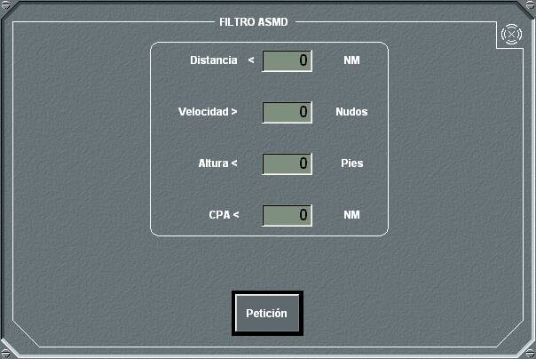

En el panel de detalle de cañones se muestra la lista de los cañones instalados en la unidad, su estado, si están en modo automático o no y la cantidad de munición disponible para cada uno de ellos.
Pulsando el botón de Alistar correspondiente a un cañón se abre el panel de Fuego de Cañón.
En este panel de Fuego del Cañón se muestra (a la derecha) el nombre del cañón. Mientras esté abierto este panel, se presentará en la Pantalla Táctica gráficamente el sector y alcance de fuego del cañón.
Desde este panel se pueden realizar las siguientes acciones:
- Designar un blanco para lanzamiento: Al pulsar el botón Blanco se designará al contacto en hook como blanco para el lanzamiento. En los campos Rumbo, Velocidad y Distancia aparecerán los datos del blanco seleccionado. En el caso de que no haya ningún contacto asociado al Hook, al pulsar este botón no se ejecutará acción alguna.
- Designar una posición para lanzamiento: Al pulsar el botón Posición se designará una posición fija o relativa para el lanzamiento determinada por la demora, distancia a la unidad propia y la altura. Esta posición se toma del Hook al pulsar el botón, o pueden introducirse manualmente. Si es tomada del Hook, el disparo será a posición fija, y en este caso si la unidad propia está en movimiento, los valores de demora y distancia de la posición fija seleccionada se actualizan automáticamente en los campos correspondientes. Si se introducen manualmente, la demora y distancia permanecerá fija, por lo que el disparo será a una posición relativa.
- Cambiar el tipo de munición del cañón: El campo munición muestra la munición actual, cuando se selecciona otro tipo de munición en el desplegable, el botón Petición cambia a color amarillo, al pulsar este botón cambia a color verde y se inicia el cambio de munición. El indicador cargando se enciende y se muestra el tiempo que resta para terminar la carga, durante este tiempo no se puede disparar el cañón y es posible cancelar el cambio de munición pulsando de nuevo el botón Petición.
El cañón debe estar en reposo para poder proceder a un cambio de munición, en caso de solicitar el cambio en otro estado (disparando, enfriándose, cargando) se muestra un aviso al operador.
- Asociar una dirección de tiro al cañón. Determinados tipos de cañones permiten que se asocie una dirección de tiro, de forma que son apuntados por la dirección de tiro cuando ilumina el blanco.
En este panel se muestra la lista de las posibles direcciones de tiro que pueden utilizarse, debiendo elegir una de ellas, cuyo nombre aparece en el campo inferior, junto con su estado (Encendida / Apagada / Dañada en el led mayor y Lock-On e Iluminación en los dos leds miniatura). Por último, pulsando en el botón FC se accede al panel de configuración de la dirección de tiro seleccionada (Para una descripción detallada ver el capítulo correspondiente al Radar).
- Introducir un ritmo de fuego, indicando el tiempo entre de disparos en segundos. Si se indica cero, se realizará un único disparo.
- Introducir la cantidad de munición por cada disparo.
- ·Realizar manualmente el disparo, pulsando el botón Fuego. Esta acción no se ejecuta en las siguientes circunstancias:
- Si la unidad designada es un submarino y se encuentra sumergido.
- En modo Manual, cuando el blanco o las coordenadas elegidas están fuera de los arcos de fuego del cañón o la distancia, altura o velocidad del blanco está fuera de los rangos permitidos.
- Cuando se dispara a blanco, si el mismo no está detectado por un radar propio de la unidad.
- Cuando se dispara a Blanco, si el radar asociado no está en lock-on o TWS (o se supere el máximo de track permitidos).
Durante el disparo, puede cancelarse la acción (alto el fuego) pulsando de nuevo el botón Fuego, que en este caso sustituye su leyenda por Cancelar.
- Activar / Desactivar el modo de disparo automático. Cuando el modo automático está activado, el cañón disparará automáticamente con el ritmo y la cantidad de munición indicada a todo contacto que cumpla las condiciones establecidas en el filtro ASMD, que pueden consultarse o modificarse pulsando el botón ASMD.

Las condiciones que pueden establecerse en este panel son las siguientes:
- Distancia menor que ... millas
- Altura menor que ... pies
- Altura menor que ... pies
- CPA menor que ... millas
Para que se produzca el disparo deben cumplirse las cuatro condiciones simultáneamente (con la excepción de que la condición de altura sólo será tenida en cuenta si se detecta altura del blanco).
Para no considerar los proyectiles lanzados por la propia unidad en los filtros ASMD, se comprueba si la amenaza se está acercando o alejando de la unidad. Para ello se examinará la dirección de avance de esa posible amenaza, es decir, una unidad sólo se tiene en cuenta como amenaza para el filtro ASMD si la demora del blanco menos su rumbo es inferior en valor absoluto a 90º.
Si el cañón está en modo automático y se solicitan disparos en manual, se desactiva el modo automático y el cañón realiza los disparos en modo manual. Si el cañón está disparando en modo manual, y se solicita activar el modo automático, se cancelan los disparos en manual y se activa el modo automático.